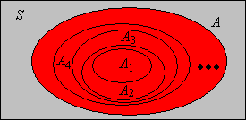
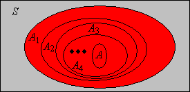

Great fleas have little fleas upon their backs to bite 'em,
And little fleas have lesser fleas, and so ad infinitum.
And the great fleas themselves, in turn, have greater fleas to go on;
While these again have greater still, and greater still, and so on.
—Agustus De Morgan, A Budget of Paradoxes
In this section we discuss several topics related to convergence of events and random variables, a subject of fundamental importance in probability theory. In particular the results that we obtain will be important for properties of distribution functions and for the weak and strong laws of large numbers. As usual, our starting point is a random experiment modeled by a probability space \( (S, \ms S, \P) \). So to review, \( S \) is the set of outcomes, \( \ms S \) the \( \sigma \)-algebra of events, and \( \P \) the probability measure on the sample space \( (S, \ms S) \).
Basic Theory
Sequences of events
Our first discussion deals with sequences of events and various types of limits of such sequences. The limits are also event. We start with two simple definitions.
Suppose that \( (A_1, A_2, \ldots) \) is a sequence of events.
The sequence is increasing if \( A_n \subseteq A_{n+1} \) for every \( n \in \N_+ \).
The sequence is decreasing if \( A_{n+1} \subseteq A_n \) for every \( n \in \N_+ \).
Note that these are the standard definitions of increasing and decreasing relative to the ordinary total order \( \le \) on the index set \( \N_+ \) and the subset partial order \( \subseteq \) on the collection of events. The terminology is also justified by the corresponding indicator variables.
Suppose that \( (A_1, A_2, \ldots) \) is a sequence of events, and let \(I_n = \bs 1_{A_n}\) denote the indicator variable of the event \(A_n\) for \(n \in \N_+\).
The sequence of events is increasing if and only if the sequence of indicator variables is increasing in the ordinary sense. That is, \(I_n \le I_{n+1}\) for each \(n \in \N_+\).
The sequence of events is decreasing if and only if the sequence of indicator variables is decreasing in the ordinary sense. That is, \(I_{n+1} \le I_n\) for each \(n \in \N_+\).
Details:
Both parts follow from the fact that if \( A \) and \( B \) are events then \( A \subseteq B \) if and only if \( \bs 1_A \le \bs 1_B \). To see this note that \( A \subseteq B \) if and only if \( s \in A \) implies \( s \in B \) for \( s \in S \), if and only if \( \bs 1_A(s) = 1 \) implies \( \bs 1_B(s) = 1 \) for \( s \in S \). Since indicator functions only take the values 0 and 1, the last statement is equivalent to \( \bs 1_A \le \bs 1_B \).
A sequence of increasing events and their union

A sequence of decreasing events and their intersection

If a sequence of events is either increasing or decreasing, we can define the limit of the sequence in a way that turns out to be quite natural.
Suppose that \( (A_1, A_2, \ldots) \) is a sequence of events.
If the sequence is increasing, we define \( \lim_{n \to \infty} A_n = \bigcup_{n=1}^\infty A_n \).
If the sequence is decreasing, we define \( \lim_{n \to \infty} A_n = \bigcap_{n=1}^\infty A_n \).
Once again, the terminology is clarified by the corresponding indicator variables.
Suppose again that \( (A_1, A_2, \ldots) \) is a sequence of events, and let \(I_n = \bs 1_{A_n}\) denote the indicator variable of \(A_n\) for \(n \in \N_+\).
If the sequence of events is increasing, then \( \lim_{n \to \infty} I_n \) is the indicator variable of \( \bigcup_{n = 1}^\infty A_n \)
If the sequence of events is decreasing, then \( \lim_{n \to \infty} I_n \) is the indicator variable of \( \bigcap_{n = 1}^\infty A_n \)
Details:
If \( s \in \bigcup_{n=1}^\infty A_n\) then \( s \in A_k \) for some \( k \in \N_+ \). Since the events are increasing, \( s \in A_n \) for every \( n \ge k \). In this case, \( I_n(s) = 1 \) for every \( n \ge k \) and hence \( \lim_{n \to \infty} I_n(s) = 1 \). On the other hand, if \( s \notin \bigcup_{n=1}^\infty A_n \) then \( s \notin A_n \) for every \( n \in \N_+ \). In this case, \( I_n(s) = 0\) for every \( n \in \N_+ \) and hence \( \lim_{n \to \infty} I_n(s) = 0 \).
If \( s \in \bigcap_{n=1}^\infty A_n \) then \( s \in A_n \) for each \( n \in \N_+ \). In this case, \( I_n(s) = 1 \) for each \( n \in \N_+ \) and hence \( \lim_{n \to \infty} I_n(s) = 1 \). If \( s \notin \bigcap_{n=1}^\infty A_n\) then \( s \notin A_k \) for some \( k \in \N_+ \). Since the events are decreasing, \( s \notin A_n \) for all \( n \ge k \). In this case, \( I_n(s) = 0 \) for \( n \ge k \) and hence \( \lim_{n \to \infty} I_n(s) = 0 \).
An arbitrary union of events can always be written as a union of increasing events, and an arbitrary intersection of events can always be written as an intersection of decreasing events:
Suppose that \((A_1, A_2, \ldots)\) is a sequence of events. Then
\(\bigcup_{i = 1}^ n A_i\) is increasing in \(n \in \N_+\) and \(\bigcup_{i = 1}^\infty A_i = \lim_{n \to \infty} \bigcup_{i = 1}^n A_i\).
\(\bigcap_{i=1}^n A_i\) is decreasing in \(n \in \N_+\) and \(\bigcap_{i=1}^\infty A_i = \lim_{n \to \infty} \bigcap_{i=1}^n A_i\).
Details:
Trivially \( \bigcup_{i=1}^n A_i \subseteq \bigcup_{i=1}^{n+1} A_i \). The second statement simply means that \( \bigcup_{n=1}^\infty \bigcup_{i = 1}^n A_i = \bigcup_{i=1}^\infty A_i\).
Trivially \( \bigcap_{i=1}^{n+1} A_i \subseteq \bigcap_{i=1}^n A_i \). The second statement simply means that \( \bigcap_{n=1}^\infty \bigcap_{i=1}^n A_i = \bigcap_{i=1}^\infty A_i \).
There is a more interesting and useful way to generate increasing and decreasing sequences from an arbitrary sequence of events, using the tail segment of the sequence rather than the initial segment.
Suppose that \( (A_1, A_2, \ldots) \) is a sequence of events. Then
\(\bigcup_{i=n}^\infty A_i\) is decreasing in \(n \in \N_+\).
\(\bigcap_{i=n}^\infty A_i\) is increasing in \(n \in \N_+\).
Since the new sequences defined in are decreasing and increasing, respectively, we can take their limits. These are the limit superior and limit inferior, respectively, of the original sequence.
Suppose that \( (A_1, A_2, \ldots) \) is a sequence of events. Define
\( \limsup_{n \to \infty} A_n = \lim_{n \to \infty} \bigcup_{i=n}^\infty A_i = \bigcap_{n=1}^\infty \bigcup_{i=n}^\infty A_i \). This is the event that occurs if an only if \( A_n \) occurs for infinitely many values of \( n \).
\( \liminf_{n \to \infty} A_n = \lim_{n \to \infty} \bigcap_{i=n}^\infty A_i = \bigcup_{n=1}^\infty \bigcap_{i=n}^\infty A_i \). This is the event that occurs if an only if \( A_n \) occurs for all but finitely many values of \( n \).
Details:
From the definition, the event \( \limsup_{n \to \infty} A_n \) occurs if and only if for each \( n \in \N_+ \) there exists \( i \ge n \) such that \( A_i \) occurs.
From the definition, the event \( \liminf_{n \to \infty} A_n \) occurs if and only if there exists \( n \in \N_+ \) such that \( A_i \) occurs for every \( i \ge n \).
Once again, the terminology and notation are clarified by the corresponding indicator variables. You may need to review limit inferior and limit superior for sequences of real numbers in the section on partial orders.
Suppose that \( (A_1, A_2, \ldots) \) is a sequence of events, and et \(I_n = \bs 1_{A_n}\) denote the indicator variable of \(A_n\) for \(n \in \N_+\). Then
\(\limsup_{n \to \infty} I_n \) is the indicator variable of \(\limsup_{n \to \infty} A_n\).
\(\liminf_{n \to \infty} I_n \) is the indicator variable of \(\liminf_{n \to \infty} A_n\).
Details:
By , \( \lim_{n \to \infty} \bs 1\left(\bigcup_{i=n}^\infty A_i\right) \) is the indicator variable of \( \limsup_{n \to \infty} A_n \). But \(\bs 1\left(\bigcup_{i=n}^\infty A_i\right) = \max\{I_i: i \ge n\}\) and hence \( \lim_{n \to \infty} \bs 1\left(\bigcup_{i=n}^\infty A_i\right) = \limsup_{n \to \infty} I_n \).
By , \( \lim_{n \to \infty} \bs 1\left(\bigcap_{i=n}^\infty A_i\right) \) is the indicator variable of \( \liminf_{n \to \infty} A_n \). But \(\bs 1\left(\bigcap_{i=n}^\infty A_i\right) = \min\{I_i: i \ge n\}\) and hence \( \lim_{n \to \infty} \bs 1\left(\bigcap_{i=n}^\infty A_i\right) = \liminf_{n \to \infty} I_n \).
Suppose that \( (A_1, A_2, \ldots) \) is a sequence of events. Then \(\liminf_{n \to \infty} A_n \subseteq \limsup_{n \to \infty} A_n\).
Details:
If \( A_n \) occurs for all but finitely many \( n \in \N_+ \) then certainly \( A_n \) occurs for infinitely many \( n \in \N_+ \).
Suppose that \( (A_1, A_2, \ldots) \) is a sequence of events. Then
Generally speaking, a function is continuous if it preserves limits. Thus, the following results are the continuity theorems of probability. Part (a) is the continuity theorem for increasing events and part (b) the continuity theorem for decreasing events.
Suppose that \((A_1, A_2, \ldots)\) is a sequence of events.
If the sequence is increasing then \(\lim_{n \to \infty} \P(A_n) = \P\left( \lim_{n \to \infty} A_n \right) = \P\left(\bigcup_{n=1}^\infty A_n\right)\)
If the sequence is decreasing then \(\lim_{n \to \infty} \P(A_n) = \P\left( \lim_{n \to \infty} A_n \right) = \P\left(\bigcap_{n=1}^\infty A_n\right)\)
Details:
Let \(B_1 = A_1\) and let \(B_i = A_i \setminus A_{i-1}\) for \(i \in \{2, 3, \ldots\}\). Note that the collection of events \(\{B_1, B_2, \ldots \}\) is pairwise disjoint and has the same union as \(\{A_1, A_2, \ldots \}\). From the countable additivity property of \(\P\) and the definition of infinite series,
\[ \P\left(\bigcup_{i=1}^\infty A_i\right) = \P\left(\bigcup_{i=1}^\infty B_i\right) = \sum_{i = 1}^\infty \P(B_i) = \lim_{n \to \infty} \sum_{i = 1}^n \P(B_i) \]
But \( \P(B_1) = \P(A_1) \) and \( \P(B_i) = \P(A_i) - \P(A_{i-1}) \) for \( i \in \{2, 3, \ldots\} \). Therefore \( \sum_{i=1}^n \P(B_i) = \P(A_n) \) and hence we have \( \P\left(\bigcup_{i=1}^\infty A_i\right) = \lim_{n \to \infty} \P(A_n) \).
The construction in the continuity theorem for increasing events
The sequence of complements \(\left(A_1^c, A_2^c, \ldots\right)\) is increasing. Hence using part (a), De Morgan's law, and the complement rule we have
\[ \P\left(\bigcap_{i=1}^\infty A_i \right) = 1 - \P\left(\bigcup_{i=1}^\infty A_i^c\right) = 1 - \lim_{n \to \infty} \P(A_n^c) = \lim_{n \to \infty} \left[1 - \P\left(A_n^c\right)\right] = \lim_{n \to \infty} \P(A_n) \]
The continuity theorems can be applied to the increasing and decreasing sequences that we constructed in and
Suppose that \((A_1, A_2, \ldots)\) is a sequence of events.
These results follows directly from definitions , and the continuity theorems .
Theorem next shows that the countable additivity axiom for a probability measure is equivalent to finite additivity and the continuity property for increasing events.
Temporarily, suppose that \( \P \) is only finitely additive, but satisfies the continuity property for increasing events (a). Then \( \P \) is countably additive.
Details:
Suppose that \( (A_1, A_2, \ldots) \) is a sequence of pairwise disjoint events. Since we are assuming that \( \P \) is finitely additive we have
\[ \P\left(\bigcup_{i=1}^n A_i\right) = \sum_{i=1}^n \P(A_i) \]
If we let \( n \to \infty \), the left side converges to \( \P\left(\bigcup_{i = 1}^\infty A_i\right) \) by the continuity assumption and , while the right side converges to \( \sum_{i=1}^\infty \P(A_i) \) by the definition of an infinite series.
There are a few mathematicians who reject the countable additivity axiom of probability measure in favor of the weaker finite additivity axiom. Whatever the philosophical arguments may be, life is certainly much harder without the continuity theorems.
The Borel-Cantelli Lemmas
The Borel-Cantelli Lemmas, named after Emil Borel and Francessco Cantelli, are very important tools in probability theory. The first lemma gives a condition that is sufficient to conclude that infinitely many events occur with probability 0.
First Borel-Cantelli Lemma. Suppose that \( (A_1, A_2, \ldots) \) is a sequence of events. If \(\sum_{n=1}^\infty \P(A_n) \lt \infty\) then \(\P\left(\limsup_{n \to \infty} A_n\right) = 0\).
Details:
From , we have \( \P\left(\limsup_{n \to \infty} A_n\right) = \lim_{n \to \infty} \P\left(\bigcup_{i = n}^\infty A_i \right) \). But from Boole's inequality, \( \P\left(\bigcup_{i = n}^\infty A_i \right) \le \sum_{i = n}^\infty \P(A_i) \). Since \( \sum_{i = 1}^\infty \P(A_i) \lt \infty \), we have \( \sum_{i = n}^\infty \P(A_i) \to 0 \) as \( n \to \infty \).
The second lemma gives a condition that is sufficient to conclude that infinitely many independent events occur with probability 1.
Second Borel-Cantelli Lemma. Suppose that \((A_1, A_2, \ldots)\) is a sequence of independent events. If \(\sum_{n=1}^\infty \P(A_n) = \infty\) then \(\P\left( \limsup_{n \to \infty} A_n \right) = 1\).
Details:
Note first that \(1 - x \le e^{-x}\) for every \(x \in \R\), and hcnce \( 1 - \P(A_i) \le \exp\left[-\P(A_i)\right] \) for each \( i \in \N_+ \). From and ,
\[ \P\left[\left(\limsup_{n \to \infty} A_n\right)^c\right] = \P\left(\liminf_{n \to \infty} A_n^c\right) = \lim_{n \to \infty} \P \left(\bigcap_{i = n}^\infty A_i^c\right) \]
But by independence and the inequality above,
\[ \P\left(\bigcap_{i = n}^\infty A_i^c\right) = \prod_{i = n}^\infty \P\left(A_i^c\right) = \prod_{i = n}^\infty \left[1 - \P(A_i)\right] \le \prod_{i = n}^\infty \exp\left[-\P(A_i)\right] = \exp\left(-\sum_{i = n}^\infty \P(A_i) \right) = 0 \]
For independent events, both Borel-Cantelli lemmas apply of course, and lead to a zero-one law.
If \( (A_1, A_2, \ldots) \) is a sequence of independent events then \( \limsup_{n \to \infty} A_n \) has probability 0 or 1:
If \(\sum_{n=1}^\infty \P(A_n) \lt \infty\) then \(\P\left( \limsup_{n \to \infty} A_n \right) = 0\).
If \(\sum_{n=1}^\infty \P(A_n) = \infty\) then \(\P\left( \limsup_{n \to \infty} A_n \right) = 1\).
This result is actually a special case of a more general zero-one law, known as the Kolmogorov zero-one law named for Andrei Kolmogorov. Also, we can use the zero-one law to derive a calculus theorem that relates infinite series and infinte products. This derivation is an example of the probabilistic method—the use of probability to obtain results, seemingly unrelated to probability, in other areas of mathematics.
Suppose that \( p_i \in (0, 1) \) for each \( i \in \N_+ \). Then
\[ \prod_{i=1}^\infty p_i \gt 0 \text{ if and only if } \sum_{i=1}^\infty (1 - p_i) \lt \infty \]
Details:
We can easily construct a probability space with a sequence of independent events \( (A_1, A_2, \ldots) \) such that \( \P(A_i) = 1 - p_i \) for each \( i \in \N_+ \). The result then follows from the proofs of the two Borel-Cantelli lemmas in and .
Our next result is a simple application of the second Borel-Cantelli lemma to independent replications of a basic experiment.
Suppose that \(A\) is an event in a basic random experiment with \(\P(A) \gt 0\). In the compound experiment that consists of independent replications of the basic experiment, the event \(A\) occurs infinitely often has probability 1.
Details:
Let \( p \) denote the probability of \( A \) in the basic experiment. In the compound experiment, we have a sequence of independent events \( (A_1, A_2, \ldots) \) with \( \P(A_n) = p \) for each \( n \in \N_+ \) (these are independent copies of \( A \)). But \( \sum_{n = 1}^\infty \P(A_n) = \infty \) since \( p \gt 0 \) so the result follows from the second Borel-Cantelli lemma .
Convergence of Random Variables
Our next discussion concerns two ways that a sequence of random variables defined for our experiment can converge. These are fundamentally important concepts, since some of the deepest results in probability theory are limit theorems involving random variables. The most important special case is when the random variables are real valued, but the proofs are essentially the same for variables with values in a metric space, so we will use the more general setting.
Thus, suppose that \( (S, d) \) is a metric space, and that \(\ms S \) is the corresponding Borel \( \sigma \)-algebra (that is, the \( \sigma \)-algebra generated by the topology), so that our measurable space is \( (S, \ms S) \). Here is the most important special case:
For \( n \in \N_+ \), the \( n \)-dimensional Euclidean space is \( (\R^n, d_n) \) where
\[ d_n(\bs x, \bs y) = \sqrt{\sum_{i=1}^n (y_i - x_i)^2}, \quad \bs x = (x_1, x_2 \ldots, x_n), \, \bs y = (y_1, y_2, \ldots, y_n) \in \R^n \]
Euclidean spaces are named for Euclid, of course. As noted above, the one-dimensional case where \( d(x, y) = |y - x| \) for \( x, \, y \in \R \) is particularly important. Returning to the general metric space, recall that if \( (x_1, x_2, \ldots) \) is a sequence in \( S \) and \( x \in S \), then \( x_n \to x\) as \( n \to \infty \) means that \( d(x_n, x) \to 0 \) as \( n \to \infty \) (in the usual calculus sense). For the rest of our discussion, we assume that \( (X_1, X_2, \ldots) \) is a sequence of random variable with values in \( S \) and \( X \) is a random variable with values in \( S \), all defined on an underlying probability space \( (\Omega, \ms F, \P) \).
We say that \(X_n \to X\) as \(n \to \infty\) with probability 1 if the event that \( X_n \to X \) as \( n \to \infty \) has probability 1. That is,
\[\P\{\omega \in \Omega: X_n(\omega) \to X(\omega) \text{ as } n \to \infty\} = 1\]
Details:
We need to make sure that the definition makes sense, in that the statement that \( X_n \) converges to \( X \) as \( n \to \infty \) defines a valid event. Note that \(X_n\) does not converge to \(X\) as \(n \to \infty\) if and only if for some \(\epsilon \gt 0\), \(d(X_n, X) \gt \epsilon\) for infinitely many \(n \in \N_+\). Note that if the this condition holds for a given \( \epsilon \gt 0 \) then it holds for all smaller \( \epsilon \gt 0 \). Moreover, there are arbitrarily small rational \( \epsilon \gt 0 \) so \(X_n\) does not converge to \(X\) as \(n \to \infty\) if and only if for some rational \(\epsilon \gt 0\), \(d(X_n, X) \gt \epsilon\) for infinitely many \(n \in \N_+\). Hence
\[ \left\{X_n \to X \text{ as } n \to \infty\right\}^c = \bigcup_{\epsilon \in \Q_+} \limsup_{n \to \infty} \left\{d(X_n, X) \gt \epsilon\right\} \]
where \( \Q_+ \) is the set of positive rational numbers. A critical point to remember is that this set is countable. So, building a little at a time, note that \( \left\{d(X_n, X) \gt \epsilon\right\} \) is an event for each \( \epsilon \in \Q_+ \) and \( n \in \N_+ \) since \( X_n \) and \( X \) are random variables. Next, the limit superior of a sequence of events is an event. Finally, a countable union of events is an event.
As good probabilists, we usually suppress references to the underlying sample space \((\Omega, \ms F)\) and write the definition simply as \( \P(X_n \to X \text{ as } n \to \infty) = 1 \). The statement that an event has probability 1 is usually the strongest affirmative statement that we can make in probability theory. So convergence with probability 1 is the strongest form of convergence. The phrases almost surely and almost everywhere are sometimes used instead of the phrase with probability 1.
Recall that metrics \( d \) and \( e \) on \( S \) are equivalent if they generate the same topology on \( S \). Recall also that convergence of a sequence is a topological property. That is, if \( (x_1, x_2, \ldots) \) is a sequence in \( S \) and \( x \in S \), and if \( d, \, e \) are equivalent metrics on \( S \), then \( x_n \to x \) as \( n \to \infty \) relative to \( d \) if and only if \( x_n \to x \) as \( n \to \infty \) relative to \( e \). So for our random variables as defined above, it follows that \( X_n \to X \) as \( n \to \infty \) with probability 1 relative to \( d \) if and only if \( X_n \to X \) as \( n \to \infty \) with probability 1 relative to \( e \).
The following statements are equivalent:
\( X_n \to X \) as \( n \to \infty \) with probability 1.
\(\P\left[d(X_n, X) \gt \epsilon \text{ for infinitely many } n \in \N_+\right] = 0 \) for every rational \(\epsilon \gt 0\).
\(\P\left[d(X_n, X) \gt \epsilon \text{ for infinitely many } n \in \N_+\right] = 0\) for every \(\epsilon \gt 0\).
\(\P\left[d(X_k, X) \gt \epsilon \text{ for some } k \ge n\right] \to 0\) as \(n \to \infty\) for every \(\epsilon \gt 0\).
Details:
From the details in definition , \( \P(X_n \to X \text{ as } n \to \infty) = 1 \) if and only if
\[ \P\left(\bigcup_{\epsilon \in \Q_+} \left\{d(X_n, X) \gt \epsilon \text{ for infinitely many } n \in \N_+\right\} \right) = 0 \]
where again \( \Q_+ \) is the set of positive rational numbers. But by Boole's inequality, a countable union of events has probability 0 if and only if every event in the union has probability 0. Thus, (a) is equivalent to (b). Statement (b) is clearly equivalent to (c) since there are arbitrarily small positive rational numbers. Finally, (c) is equivalent to (d) by the continuity theorem .
Our next result gives a fundamental criterion for convergence with probability 1:
If \(\sum_{n=1}^\infty \P\left[d(X_n, X) \gt \epsilon\right] \lt \infty\) for every \(\epsilon \gt 0\) then \(X_n \to X\) as \(n \to \infty\) with probability 1.
Details:
By the first Borel-Cantelli lemma , if \(\sum_{n = 1}^\infty \P\left[d(X_n, X) \gt \epsilon\right) \lt \infty\) then \(\P\left[d(X_n, X) \gt \epsilon \text{ for infinitely many } n \in \N_+\right) = 0\). Hence the result follows from .
Here is our next mode of convergence.
We say that \(X_n \to X\) as \(n \to \infty\) in probability if
\[\P\left[d(X_n, X) \gt \epsilon\right] \to 0 \text{ as } n \to \infty \text{ for each } \epsilon \gt 0\]
The phrase in probability sounds superficially like the phrase with probability 1. However, as we will soon see, convergence in probability is much weaker than convergence with probability 1. Indeed, convergence with probability 1 is often called strong convergence, while convergence in probability is often called weak convergence.
If \(X_n \to X\) as \(n \to \infty\) with probability 1 then \(X_n \to X\) as \(n \to \infty\) in probability.
Details:
Let \( \epsilon \gt 0 \). Then \( \P\left[d(X_n, X) \gt \epsilon\right] \le \P\left[d(X_k, X) \gt \epsilon \text{ for some } k \ge n\right]\). But if \( X_n \to X \) as \( n \to \infty \) with probability 1, then the expression on the right converges to 0 as \( n \to \infty \) by part (d) of . Hence \( X_n \to X \) as \( n \to \infty \) in probability.
The converse fails with a passion. A simple counterexample is given in . However, there is a partial converse that is very useful.
If \(X_n \to X\) as \(n \to \infty\) in probability, then there exists a subsequence \((n_1, n_2, n_3 \ldots)\) of \(\N_+\) such that \(X_{n_k} \to X\) as \(k \to \infty\) with probability 1.
Details:
Suppose that \( X_n \to X \) as \( n \to \infty \) in probability. Then for each \(k \in \N_+\) there exists \(n_k \in \N_+\) such that \(\P\left[d\left(X_{n_k}, X \right) \gt 1 / k \right] \lt 1 / k^2\). We can make the choices so that \(n_k \lt n_{k+1}\) for each \(k\). It follows that \(\sum_{k=1}^\infty \P\left[d\left(X_{n_k}, X\right) \gt \epsilon \right] \lt \infty\) for every \(\epsilon \gt 0\). By , \(X_{n_k} \to X\) as \(n \to \infty\) with probability 1.
Note that the proof works because \(1 / k \to 0\) as \(k \to \infty\) and \(\sum_{k=1}^\infty 1 / k^2 \lt \infty\). Any two sequences with these properties would work just as well.
There are two other modes of convergence that we will discuss later:
Suppose that we have an infinite sequence of coins labeled \(1, 2, \ldots\) Moreover, coin \(n\) has probability of heads \(1 / n^a\) for each \(n \in \N_+\), where \(a \gt 0\) is a parameter. We toss each coin in sequence one time. In terms of \(a\), find the probability of the following events:
infinitely many heads occur
infinitely many tails occur
Details:
Let \(H_n\) be the event that toss \(n\) results in heads, and \(T_n\) the event that toss \(n\) results in tails.
The following exercise gives a simple example of a sequence of random variables that converge in probability but not with probability 1. Naturally, we are assuming the standard metric on \( \R \).
Suppose again that we have a sequence of coins labeled \(1, 2, \ldots\), and that coin \(n\) lands heads up with probability \(\frac{1}{n}\) for each \(n \in \N_+\). We toss the coins in order to produce a sequence \((X_1, X_2, \ldots)\) of independent indicator random variables with
\[\P(X_n = 1) = \frac{1}{n}, \; \P(X_n = 0) = 1 - \frac{1}{n}; \quad n \in \N_+\]
\(\P(X_n = 0 \text{ for infinitely many } n) = 1\), so that infinitely many tails occur with probability 1.
\(\P(X_n = 1 \text{ for infinitely many } n) = 1\), so that infinitely many heads occur with probability 1.
\(\P(X_n \text{ does not converge as } n \to \infty) = 1\).
\(X_n \to 0\) as \(n \to \infty\) in probability.
Details:
This follow from the second Borel-Cantelli lemma , since \( \sum_{n = 1}^\infty \P(X_n = 0) = \infty \)
This also follows from the second Borel-Cantelli lemma , since \( \sum_{n = 1}^\infty \P(X_n = 1) = \infty \).
This follows from parts (a) and (b). Recall that the intersection of two events with probability 1 still has probability 1.
Suppose \( 0 \lt \epsilon \lt 1 \). Then \( \P\left(\left|X_n - 0\right| \gt \epsilon\right) = \P(X_n = 1) = \frac{1}{n} \to 0 \) as \( n \to \infty \).
Discrete Spaces
Recall that a measurable space \( (S, \ms S) \) is discrete if \( S \) is countable and \( \ms S \) is the collection of all subsets of \( S \) (the power set of \( S \)). Moreover, \( \ms S \) is the Borel \( \sigma \)-algebra corresponding to the discrete metric \( d \) on \( S \) given by \( d(x, x) = 0 \) for \( x \in S \) and \( d(x, y) = 1 \) for distinct \( x, \, y \in S \). How do convergence with probability 1 and convergence in probability work for the discrete metric?
Suppose that \( (S, \ms S) \) is a discrete space. Suppose further that \( (X_1, X_2, \ldots) \) is a sequence of random variables with values in \( S \) and \( X \) is a random variable with values in \( S \), all defined on the probability space \( (\Omega, \ms F, \P) \). Relative to the discrete metric \( d \),
\( X_n \to X \) as \( n \to \infty \) with probability 1 if and only if \( \P(X_n = X \text{ for all but finitely many } n \in \N_+) = 1 \).
\( X_n \to X \) as \( n \to \infty \) in probability if and only if \( \P(X_n \ne X) \to 0 \) as \( n \to \infty \).
Details:
If \( (x_1, x_2, \ldots) \) is a sequence of points in \( S \) and \( x \in S \), then relative to metric \( d \), \( x_n \to x \) as \( n \to \infty \) if and only if \( x_n = x \) for all but finitely many \( n \in \N_+ \).
If \( \epsilon \ge 1 \) then \( \P[d(X_n, X) \gt \epsilon] = 0 \). If \( \epsilon \in (0, 1) \) then \( \P[d(X_n, X) \gt \epsilon] = \P(X_n \ne X) \).
Of course, it's important to realize that a discrete space can be the Borel space for metrics other than the discrete metric.